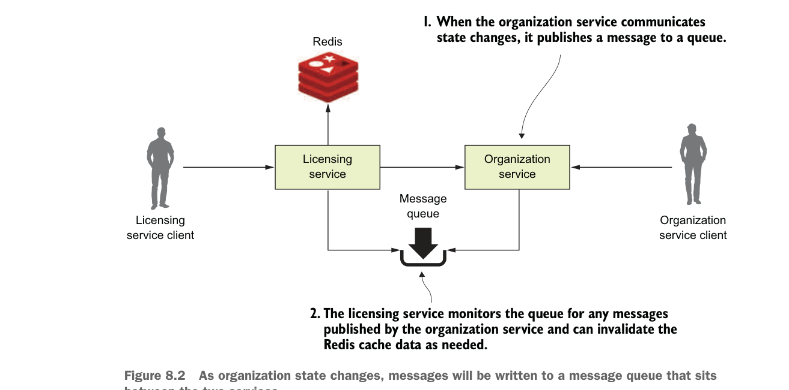

8.1.2 Dùng messaging để truyền đạt thay đổi trạng thái giữa các dịch vụ
Với cách tiếp cận messaging, bạn sẽ chèn một queue vào giữa licensing service và organization service. Queue này sẽ không được dùng để đọc dữ liệu từ organization service, mà thay vào đó sẽ được organization service dùng để publish mỗi khi có bất kỳ thay đổi trạng thái nào trong dữ liệu tổ chức do organization service quản lý. Hình 8.2 minh họa cách tiếp cận này.

Khi trạng thái tổ chức thay đổi, các message sẽ được ghi vào message queue nằm giữa hai dịch vụ.
Trong mô hình ở hình 8.2, mỗi khi dữ liệu tổ chức thay đổi, organization service sẽ publish một message ra queue. Licensing service theo dõi queue để nhận message và khi có message đến, nó xóa bản ghi tổ chức tương ứng khỏi bộ nhớ đệm Redis. Khi nói về việc truyền đạt trạng thái, message queue đóng vai trò trung gian giữa licensing service và organization service. Cách tiếp cận này mang lại bốn lợi ích:
- Ghép chặt lỏng
- Độ bền
- Khả năng mở rộng
- Linh hoạt
Ghép chặt lỏng Một ứng dụng microservice có thể gồm hàng chục dịch vụ nhỏ và phân tán phải tương tác với nhau và quan tâm đến dữ liệu do